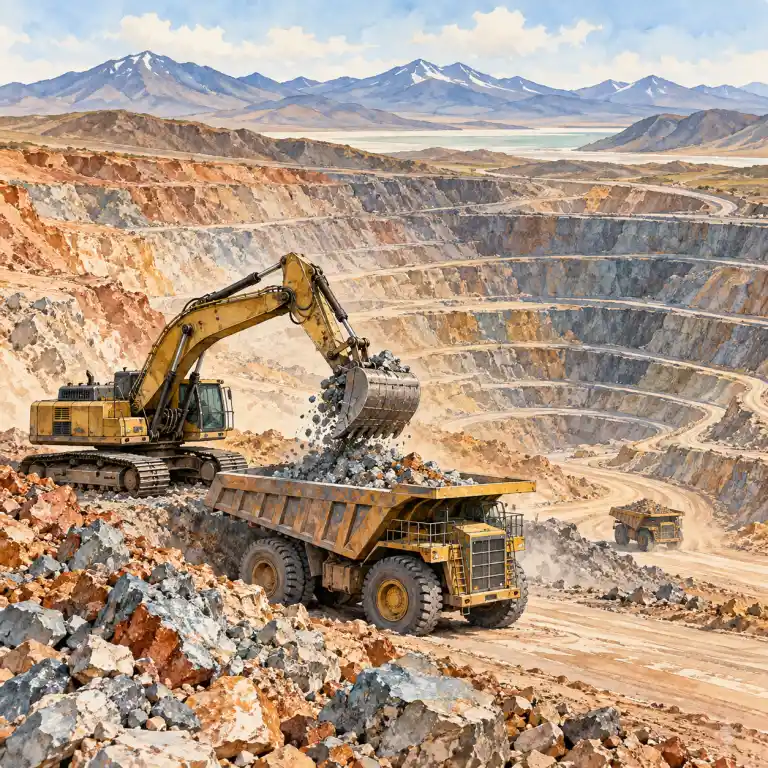
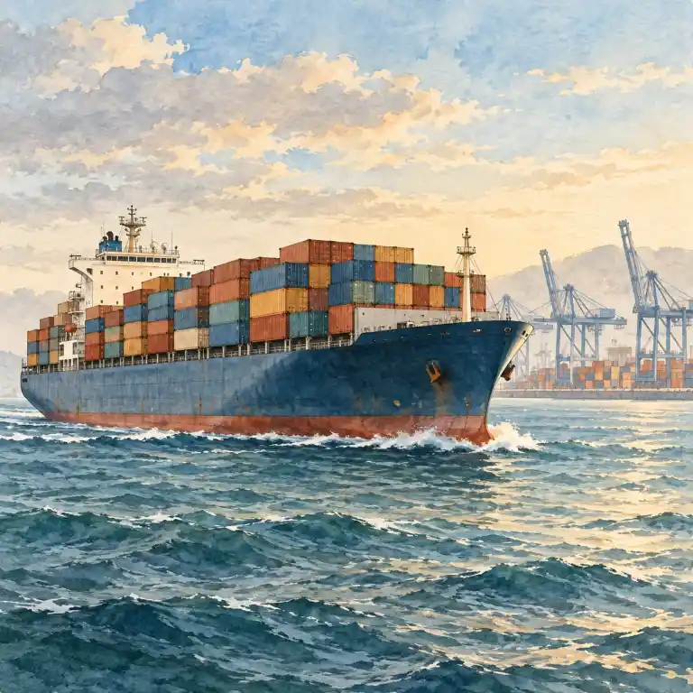
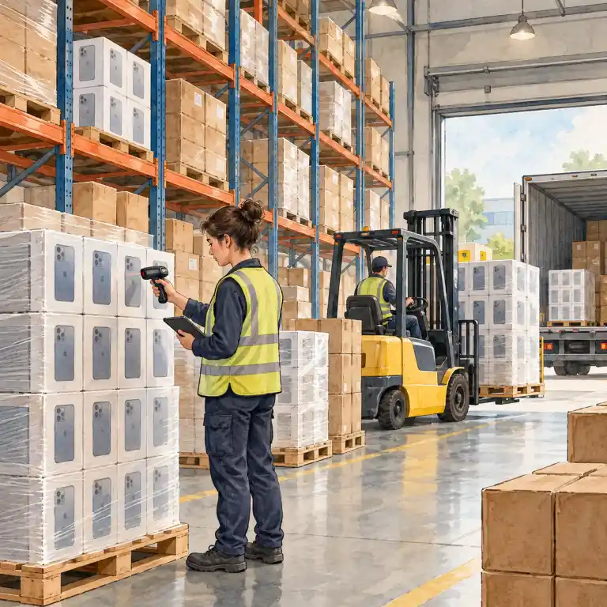
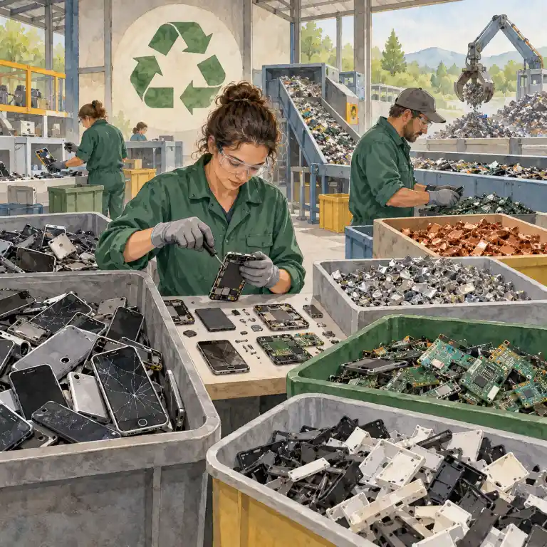

Čtyři sektory
Primární: zemědělství, lesnictví, rybolov, těžba. Sekundární: průmysl a stavebnictví. Terciární: služby (obchod, doprava, školství, zdravotnictví). Kvartérní: věda a výzkum.
Pro 9. ročník: sektory hospodářství, mezinárodní obchod a globální dodavatelské sítě.
Všechno, co lidé dělají, aby si vydělali, tvoří hospodářství. Dělí se na sektory podle toho, co práce dělá: bere něco z přírody, něco vyrábí, poskytuje službu, nebo vymýšlí nové.
Primární: zemědělství, lesnictví, rybolov, těžba. Sekundární: průmysl a stavebnictví. Terciární: služby (obchod, doprava, školství, zdravotnictví). Kvartérní: věda a výzkum.
Hrubý domácí produkt = hodnota zboží a služeb vytvořených v zemi za rok. HDP na obyvatele dovolí porovnat bohatství velké a malé země.
Propojování světa obchodem, dopravou, informacemi a kulturou. Výrobek vzniká v dodavatelském řetězci: surovina → výroba → doprava → sklad → prodej → recyklace.
Struktura hospodářství prozradí vyspělost země: ve vyspělých zemích pracuje nejvíc lidí ve službách a nejméně v zemědělství; v rozvojových zemích pracuje velký podíl lidí v zemědělství. Země, která vyváží hlavně jednu surovinu, je zranitelná – když cena klesne, klesnou i její příjmy.
Firmy přesouvají výrobu tam, kde jsou nižší náklady nebo blíž suroviny a zákazníci; vznikají nadnárodní společnosti. Řetězec přes celý svět je ale křehký: výpadek jednoho článku zastaví výrobu jinde. Typická chyba: řadit dopravu nebo obchod do průmyslu – nic nevyrábějí, jsou to služby.
V zemi A pracuje většina lidí v zemědělství, v zemi B většina ve službách. Která je spíš vyspělá?
✅ Vyspělá je spíš země B, kde převažují služby.




Hospodářství dělíme na primární (zemědělství, těžba), sekundární (průmysl) a terciární (služby). Ve vyspělých zemích převažují služby. Globalizace propojila výrobu do dodavatelských řetězců přes celý svět.